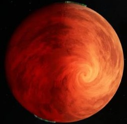
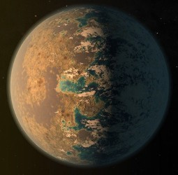
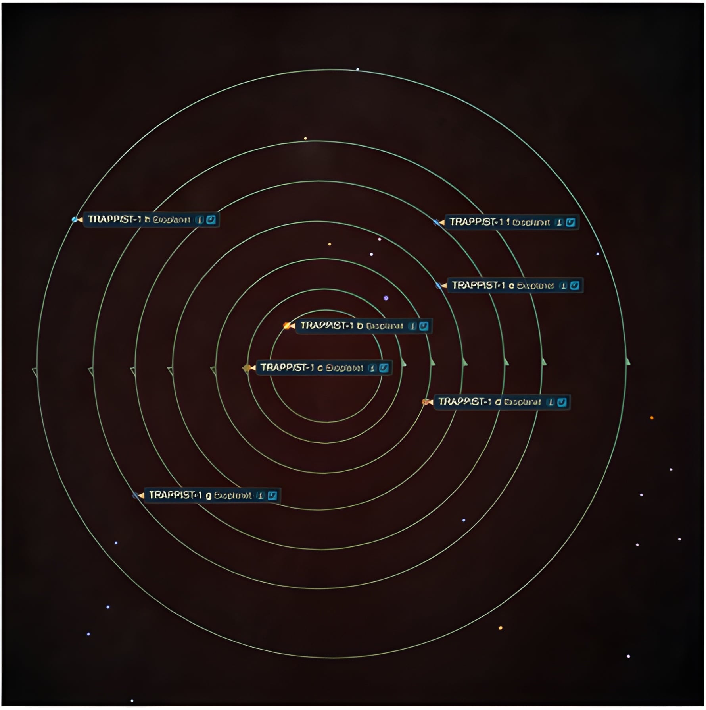

The center of the system is an ultra-cool red dwarf star, only slightly larger than Jupiter and roughly 9% of our Sun's mass. It is cool, faint, and emits radiation mostly in the infrared

Located near the inner edge of the habitable zone, TRAPPIST-1d is the lightest planet in the system. It receives about the same energy from its star as Earth does from the Sun.
To explore the TRAPPIST-1 system, click on a button underneath the exoplanet you would like to explore. Each exoplanet page will provide information about its environment and characteristics.
On the system page, click the dropbox to select which exoplanet you would like to explore.
Each page will tell you about the exoplanets:
